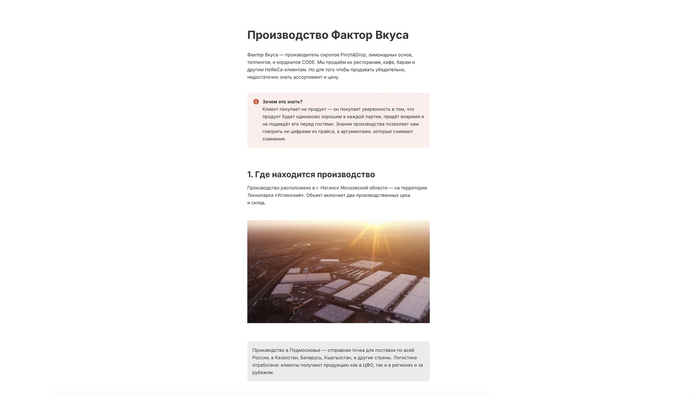

I design and build the online courses your team actually finishes. Я проектирую и собираю онлайн-курсы, которые команда проходит до конца.
Hi, I'm Mariia. I've spent the last year and a half running L&D solo for a B2B distributor: needs analysis, research, course design, production, the LMS, all of it. The year and a half before that, I did the same work as part of a small team. Before all of it, five years teaching English, which is honestly where I learned to think about pacing and attention span in the first place.
Привет, я Мария. Последние полтора года веду обучение и развитие персонала одна, для B2B-дистрибьютора: анализ потребностей, исследование, разработка курсов, продакшн, LMS, всё на мне. До этого полтора года делала то же самое в команде. А ещё раньше пять лет преподавала английский, и именно там я научилась чувствовать темп подачи материала и то, сколько внимания человек способен удержать.
Russian, native · English, C1 · Spanish, A2 Русский: родной · Английский: C1 · Испанский: A2
Same process, every projectОдин процесс на каждый проект
Different problem every time, same five steps underneath. Here's what actually happens between "we need a course" and reps using it.
Задача каждый раз новая, а шагов всегда пять. Вот что происходит между фразой "нужен курс" и моментом, когда менеджеры начинают им пользоваться.
Six courses, six different problemsШесть курсов, шесть разных задач
Every one of these started as someone's actual problem, not a brief. Click through for the story, including what I'd change.
Каждый из них начинался с чьей-то реальной проблемы, а не с брифа. Откройте карточку, чтобы прочитать историю, включая то, что я бы изменила.
Most of my reps already knew the product facts cold. What tripped them up was the conversation itself: handling an objection and doing cost math out loud, in the moment, in front of a client.
Менеджеры и так знали продукт наизусть. Спотыкались они на самом разговоре: отработке возражений и расчёте стоимости вслух, на месте, перед клиентом.
So I built ODK as a scripted exchange between our travelling manager and a bar owner, and put the cost math inside the dialogue, right where a rep would actually need it, not in a reference sheet they'd have to remember to open mid-call.
Поэтому я сделала ODK как сценарий диалога между нашим разъездным менеджером и владельцем бара, а расчёт стоимости встроила прямо в разговор, именно там, где он нужен, а не в отдельную шпаргалку, про которую нужно вспомнить посреди звонка.
It landed: 100% of the 75 reps who tried it rated it clear or very clear, NPS 70.7. The one thing I'd change: the simulated client agrees too easily. A "difficult client" branch is next.
Сработало: все 75 менеджеров, прошедших курс, оценили его как понятный или очень понятный, NPS 70,7. Единственное, что я бы поменяла: смоделированный клиент слишком легко соглашается. Дальше в планах ветка со "сложным клиентом".
▶ Launch the full course ▶ Открыть курс целикомC.O.D.E. is a cordial line walking into a category full of trusted, familiar competitors. Reps needed more than a features list. They needed a way to explain, credibly, why it was worth switching.
C.O.D.E., линейка кордиалов, выходит на рынок, где клиенты уже доверяют другим, знакомым брендам. Менеджерам был нужен не список характеристик, а способ убедительно объяснить, зачем вообще переходить на другой продукт.
I built it as a page-turning storybook tied to the product's own maritime branding, opening with the real history of cordials before ever getting to the pitch, then landing a direct cordial-vs-syrup comparison that pre-empts the question reps get constantly. The quiz leans on open-ended scenarios instead of pure recall.
Я сделала курс как книгу с перелистыванием страниц, завязанную на морской брендинг продукта: сначала настоящая история кордиалов, и только потом презентация. Прямое сравнение кордиала с сиропом снимает вопрос, который менеджерам задают постоянно. В квизе не столько проверка памяти, сколько открытые ситуации из практики.
145 of 188 reps rated it 9–10 (NPS 70.2), and 94.7% called it clear. A vocal minority thought the pirate framing was too playful for work training, and one quiz format graded too strictly. Both are things I check for now before I ship anything.
145 из 188 менеджеров поставили курсу 9–10 баллов (NPS 70,2), а 94,7% назвали его понятным. Часть аудитории посчитала пиратскую тему слишком несерьёзной для рабочего обучения, а один формат вопроса в квизе оценивался слишком строго. Теперь я проверяю оба момента перед запуском любого курса.
▶ Launch the full course ▶ Открыть курс целикомNobody assigned this to me. I just kept noticing reps ask the same questions a simple reference page could answer, so I built one.
Никто мне это не поручал. Я просто заметила, что менеджеры постоянно задают одни и те же вопросы, на которые могла бы ответить простая справочная страница, и сделала её.
Planned the structure, wrote the content, built it with AI-assisted coding tools, and worked with IT to get it onto a real server: an internal site at cbnew.complexbar.ru. Ran a focus group with managers before it went live.
Продумала структуру, написала контент, собрала сайт с помощью ИИ-инструментов для разработки и вместе с IT развернула его на сервере: внутренний сайт cbnew.complexbar.ru. Перед запуском проверила его на фокус-группе менеджеров.
It stuck. When a client asks something mid-conversation, cbnew is now the default place reps check first.
Прижилось. Когда клиент спрашивает что-то посреди разговора, cbnew теперь первое место, куда заглядывают менеджеры.
The company lost its ready-made course library to a budget cut right as individual development plans (IDPs) became the department's top priority. Soft-skills training suddenly had to exist, with nothing left to build it from.
Компания из-за сокращения бюджета потеряла доступ к готовой библиотеке курсов ровно в тот момент, когда индивидуальные планы развития (ИПР) стали приоритетом отдела. Обучение soft skills нужно было создать, а материалов для этого не осталось.
I adapted an English-language source instead of starting from zero, but cut its redundancy rather than translating it line for line, and built a full set of custom SVG illustrations, covers, and banners to replace what the library used to provide. It needed to read as finished, not a patch job.
Вместо того чтобы начинать с нуля, я адаптировала англоязычный источник, но не переводила его дословно, а убрала повторы. Ещё нарисовала набор SVG-иллюстраций, обложку и баннеры взамен того, что раньше давала библиотека. Курс должен был выглядеть завершённым, а не заплаткой на скорую руку.
Managers walked away with tools for their actual day-to-day work, not abstract theory. That was the entire point of tying it to the IDP process.
Руководители получили инструменты для реальной ежедневной работы, а не абстрактную теорию. В этом и был смысл привязки курса к процессу ИПР.

Sales managers were selling a product without a real answer to "how is this actually made?" That's exactly the question that builds trust with a client comparing suppliers.
Менеджеры продавали продукт, не имея внятного ответа на вопрос "а как это вообще производят?". А ведь именно этот вопрос формирует доверие у клиента, который выбирает между поставщиками.
I structured it around the stages of production across seven sections, so reps could read start to finish or jump straight to whatever a client had just asked. Production-side experts reviewed it with tracked changes so nothing got approved off the record, and I paired the launch with an internal announcement so it didn't just appear quietly.
Я выстроила курс вокруг этапов производства, разбив его на семь разделов: можно читать по порядку или сразу перейти к тому, о чём спросил клиент. Эксперты со стороны производства проверяли текст через режим правок, чтобы ничего не утверждалось на словах, а запуск сопроводила внутренним анонсом, чтобы курс не появился незаметно.
It reached people well outside the sales team who read it purely out of curiosity about how the factory works. Reps came away able to talk production with real lead times, not vague reassurance.
Курс читали далеко не только продажники, просто из любопытства, как устроен завод. А менеджеры теперь могут говорить о производстве конкретными сроками, а не общими заверениями.
Teams in this company rarely saw each other's work. There wasn't a regular, readable way for people to connect commercial numbers to market context, or to what other departments were actually doing.
Команды в компании редко видели работу друг друга. Не было регулярного и понятного формата, который связывал бы коммерческие показатели с ситуацией на рынке и тем, чем реально занимаются другие отделы.
I paired results with outside context (restaurant openings, HoReCa trends) so the numbers meant something, and every draft got a pass specifically to cut generic, AI-sounding phrasing so it read like a person had written it for colleagues. Eventually managers started using it for personal wins too: one issue sat a marathon finish right next to commercial results.
Я сопровождала цифры внешним контекстом (открытия ресторанов, тренды HoReCa), чтобы показатели что-то значили, и в каждом черновике отдельно вычищала общие, ИИ-звучащие формулировки, чтобы текст читался так, будто его написал человек для коллег. Со временем руководители стали присылать туда и личные достижения: в одном выпуске финиш марафона соседствовал с коммерческими результатами.
After one issue, the CEO personally praised the people mentioned in it. That's when I knew it was actually being read, not just circulated.
После одного из выпусков генеральный директор лично похвалил упомянутых в нём людей. Тогда я поняла, что дайджест действительно читают, а не просто рассылают.
What reps actually saidЧто говорят менеджеры
Pulled from post-course surveys for C.O.D.E. and ODK, unedited.
Из опросов после курсов C.O.D.E. и ODK, без правок.
Let's talk.На связи.
Open to instructional design and L&D roles, remote or relocation. Click any field below to copy it.
Открыта к ролям instructional designer и L&D-специалиста, удалённо или с переездом. Нажмите на поле ниже, чтобы скопировать его.